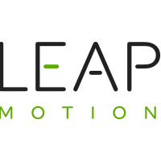

Projet d'ARVR
Choix des technologies
Dans le cadre de l'UE de réalité augmentée/virtuelle, nous avions pour but de construire un application dont les interactions avec celles ci se faisaient via des dispostifs de RVRA. Pour construire une telle application, nous avons choisi d'utiliser un LeapMotion et un Occulus Rift. Pour accélérer le prototypage nous avons aussi utilisé un moteur de jeu. Nous avons choisi Unreal Engine 4 (4.18.1).
|

|
|
Toujours dans l'optique d'un prototypage rapide, nous n'avions pas le temps de developper une interface permettant à Unreal Engine de communiquer avec l'API du LeapMotion. Nous avons donc utiliser un plugin (non-officiel). De plus, nous avons aussi utilisé le système Blueprint qui est un système de programmation visuel comme Scratch propre à Unreal.
Voici un rapide aperçu de ce que nous a permi de faire ce systeme:
Choix du projet
Une fois les technologies que nous allions utiliser bien définies, il restait à savoir quel type de projet nous souhaitions construire. N'ayant jamais eu l'occasion de manipuler le LeapMotion, nous avons décidé de créer une application bac à sable que nous avons appelé avec beaucoup d'originalité SandBox. L'objectif était de pouvoir explorer au maximum les possibilités offertes par ces technologies et donc d'ajouter le plus d'interactions différentes possible. Ce que nous souhaitions, à la fin du projet, c'est d'avoir une vision claire des possibilités mais aussi des freins offerts par de telles technologies.
Projet
L'idée principale sur laquelle nous étions parti était que l'utilisateur devait pouvoir contrôler le monde et donc, qui dit contrôler dit pouvoir se déplacer, poser des objets, en détruire certains, etc. Cette idée étant assez vaste et offrant beaucoup (trop) de possibilités, nous nous sommmes limités pour pouvoir prendre le temps de bien gérer nos interactions. C'est ainsi que nous avons l'idée de déguiser notre application sous la forme d'un mini-jeu (le terme de jeu au sens technique n'est pas approrié car il n'y a pas de game loop) ou au lieu de simplement poser des objets dans le monde l'utilisateur pourrait lancer ces objets sur des cibles aléatoirement placées dans celui ci.
Ci-dessous vous trouverez la liste des différentes interactions possibles :
Note : Toute ressemblance avec des personnes ou des situations réelles ayant existé serait purement fortuite et totalement indépendante de notre volonté.
Pour détruire ces cibles, il faut ouvrir votre inventaire dans lequel est stocké une boule de feu, une boule d'eau et une chaise (allez savoir pourquoi..). Aprés avoir sélectionné un de ces 3 objets, vous pouvez le lancer. L'effet résultant de ce lancé varie en fonction la cible que vous avez touché :
- Si vous lancez une boule de feu
- sur une cible alliée, aie la boulette, vous devez vous dépêchez d'éteindre ce carnage ! Votre seule option est de lancer une boule d'eau pour éteindre le feu.
- sur une cible ennemie, patienter quelques instants, prenez un café, mettez vous à l'aise et observez le feu faire son travail et détruire la cible ennemie.
- Si vous lancez une boule d'eau
- sur une cible alliée, cela ne sert à rien : vous devriez l'utilisez pour éteindre un feu involontaire.
- sur une cible ennemie, ça ne fait pas de mal et c'est sympa ! Attention toutefois à ne pas éteindre malencontreusement un feu que vous auriez volontairement déclenché !
- Si vous voulez vous défoulez et que vous avez choisit la chaise
- sur une cible alliée, cela devrait entrainer une pénalité mais elle n'a pas encore été développé. Elle pourrait faire l'objet d'une mise-à-jour !
- sur une cible ennemie, cela devrait entrainer un super méga bonus de la mort qui tue, mais les ambitions des développeurs était un peu trop élevé.
Problèmes rencontrés et solutions apportées
-
SDK LeapMotion pour Unreal Engine 4 incomplet
Problème: Comme expliqué au début, nous n'avons pas pu nous permettre d'implémenter une interface pour communiquer avec l'API LeapMoion et de ce fais nous avons dû utiliser un plugin. Le plugin est encore en developpement et il en a résulté que certains mouvements ne fonctionnaient pas ou qu'à moitié (beaucoup de valeur à hardcoder pour obtenir un bon résultat). De plus, le degré de liberté offert par le plugin est assez limité, même s'il automatise et facilite beaucoup de chose.
Solution: Nous n'avons pas tout le temps pu utiliser les événements fournis par le plugin (déclenchement parfois trop hasardeux et non maîtrisé) et nous avons donc dû "coder" ces mouvements à la main. Par exemple, concernant la rotation de la main pour ouvrir l'inventaire nous avons implémenté un événement maison qui vérifie en permanence la position de la main, sa position il y a x secondes, la valeur des normals à ces deux instants et qui nous permet donc de savoir quand est-ce que la main a été retournée.
-
Oculus Rift + LeapMotion + UE4 → Crash
Problème: Pour une raison encore inconnue à ce jour, il nous a été impossible d’utiliser correctement les trois technologies en même temps.
Solution: Pour pallier à ce problème nous avons arrêté d’utiliser l'Oculus Rift ce qui est dommage car l'immersion est de suite moins interessante. -
Détection du LeapMotion assez hasardeuse parfois
Problème: Les mains disparaissent/se téléportent, le visage est parfois considéré comme une main, les occlusions (entre les mains ou les doigts) causent parfois quelques soucis.
Solution: Pour pallier à ce problème, nous avons ajouté des seuils de tolérance assez strict à certains de nos mouvements. Ces problèmes sont aussi beaucoup moins présent voir totalement absent lors de l’utilisation avec du LeapMotion avec un Oculus Rift. Puisque nous subissions des crashs en utilisant ces deux technologies en même temps, nous aurions juste aimé pouvoir forcer l'utilisation du LeapMotion en mode casque, en scotchant ce dernier à des lunettes par exemple, mais le plugin Unreal détectait automatiquement si un Occulus était branché ou non et nous n'avons pas réussi à forcer le plugin à fonctionner en mode casque. Ainsi si nous plaçons le LeapMotion sur des lunettes, les mains apparaissaient retournées et renversées en jeu car le LeapMotion considéré qu'il était posé à plat sur une table.
Améliorations
Notre projet peut facilement être améliorer en rajoutant par exemple de nouvelles interactions telle que le déplacement dans la scène, la possibilité de déplacer/poser un objet, etc.Il serait aussi intéressant d'ajouter un tutoriel expliquant les différentes interactions possibles au lancement de l'applcation.
Une meilleure gestion des mouvements permettrait une plus grande fluidité et facilité d'interaction ce qui augmenterait le confort utilisateur.